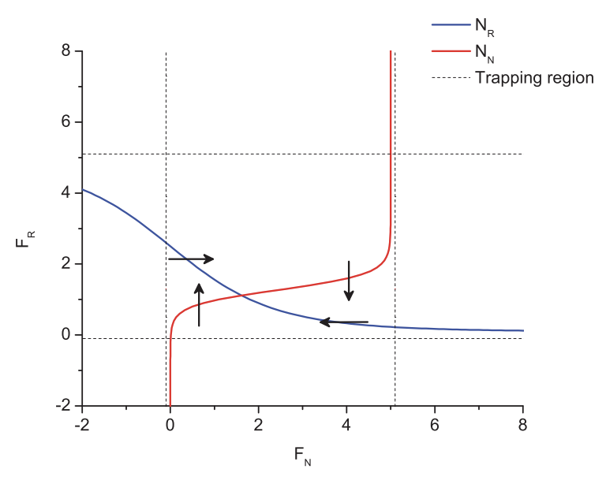

Using Agent-Based Models to Study Impacts of Built Environment on Physical Activity Levels, Teaching Session
Aparna Ananthasubramaniam
Active Living Research Conference, 2014.
In this teaching session on agent-based modeling for public health researchers, we covered how to formulate an agent-based model and examples of their applications in studying the relationship between a neighborhood's built environment and the physical activity levels of their inhabitants.
Presentation.

Contrasting existence and robustness of REM/NREM cycling in physiologically-based models of regulatory networks
Cecilia Diniz Behn, Aparna Ananthasubramaniam, Victoria Booth
SIAM Journal of Applied Dynamical Systems, 2013
Typical human sleep throughout the night consists of alternating periods of rapid eye movement (REM) sleep and non-REM (NREM) sleep. The purpose of this study is to use physiologically based mathematical models to explore the dynamic implications associated with competing hypotheses for network-based REM sleep regulation. By establishing the implications of network structure for the mechanisms and dynamics of NREM/REM state transitions, this comparative analysis identifies key targets for future experimental work to distinguish the structure of the proposed physiological REM sleep regulatory network.
Link. PDF. Presentation at Northern California Undergraduate Mathematics Conference, 2010.